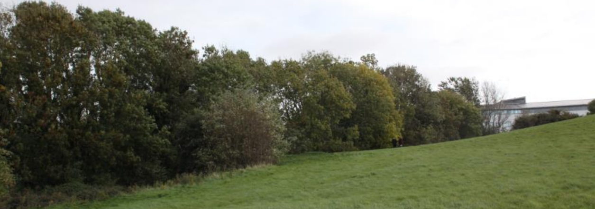
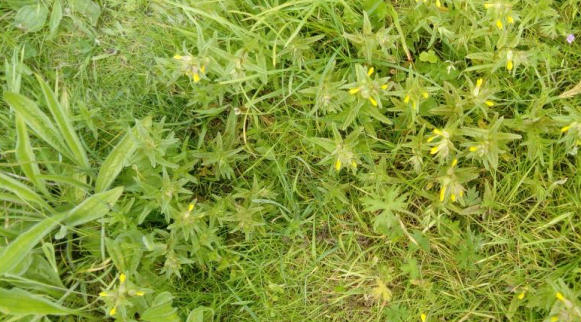
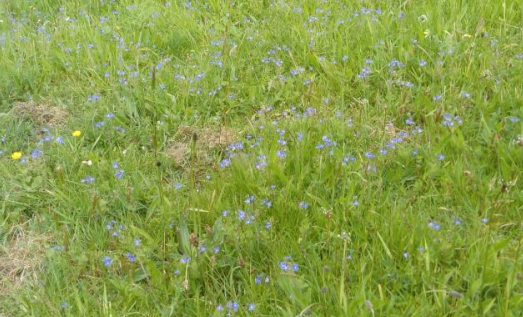
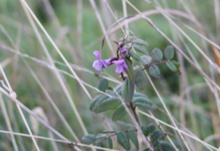
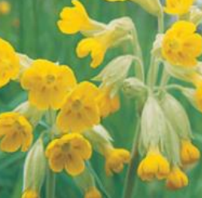
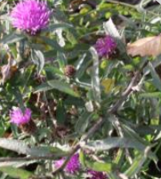

The Hay Meadow, Lost Habitats
- Farm Ecology created the landscape as we know it.
- Over the last 40 years, farming has intensified to meet production demands.
As a consequence most of our wildflower-rich meadows have been lost.
- Allowing grass species to grow tall provides shelter and
overwintering sites for many ground beetles and spiders.


Relic Hedges and treelines
- The hedgerows in Fingal County account for 1200ha, of “linear woodland” cover.
- There is a drive to increase the woodland coverage in Fingal to 7650ha by 2030 (Fingal County Council, 2010).



Mixed Grass Species
- Plant species important to invertebrates
- Greater knapweed (Centaurea scabiosa) support 16 varieties of butterflies, however
wild grasses and herbage are required to support the caterpillar stage
- Rhinanthus minor
- Yellow rattle flowers
- Myosotis arvensis